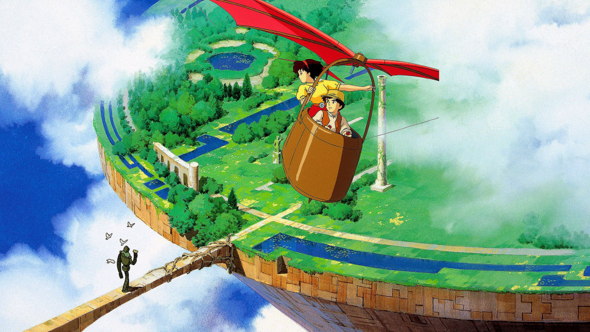
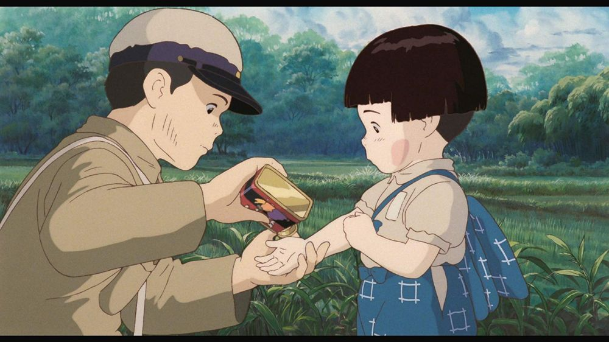
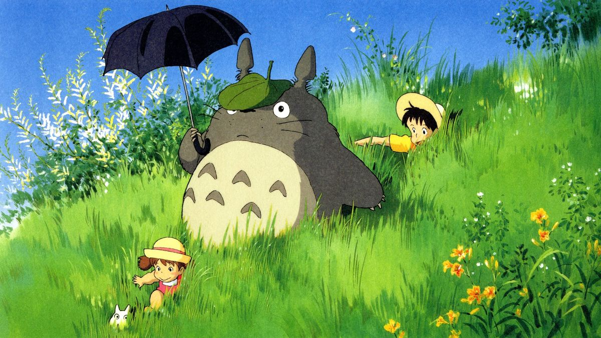
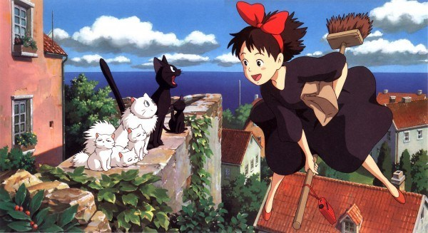
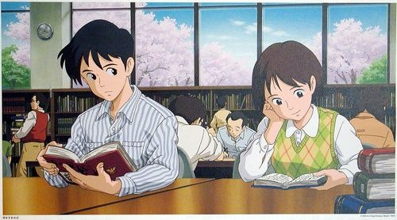
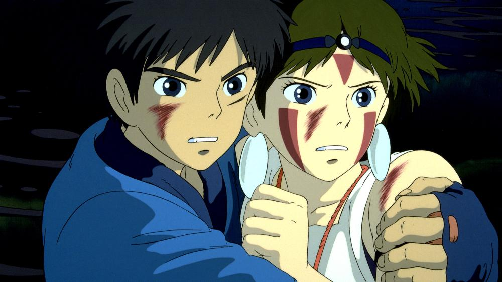
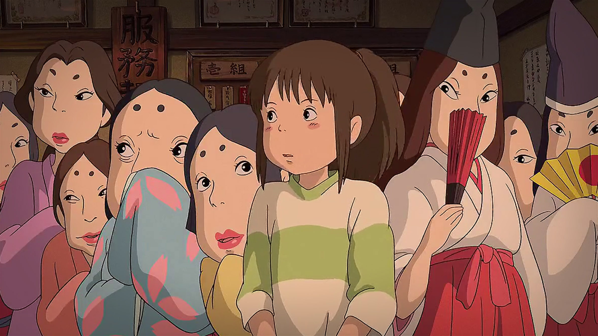
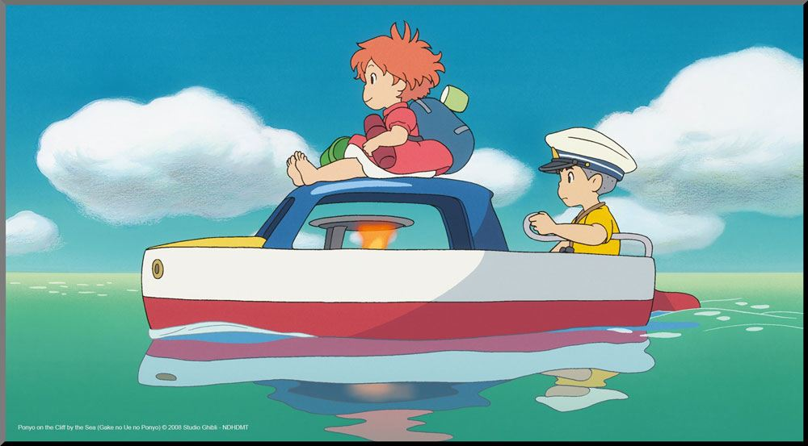
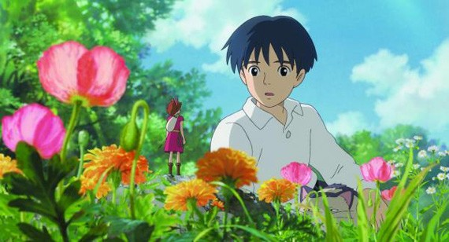

1. CASTLE IN THE SKY(1986)
This is a 1986 Japanese animated fantasy adventure film written and directed by Hayao Miyazaki. It was the first film animated by Studio Ghibli and animated for Tokuma Shoten. It follows the adventures of a boy and girl in the late 19th century trying to guard the magical crystals from a group of military agents, while searching for the legendary floating castle.
An interesting story to watch because it has very beautiful graphics. about the secret castle and Laputa descent. make anyone who watched it filled with questions about the imagination of this film.
2. GRAVE OF THE FIREFLIES (1988)
Set in the city of Kobe, Japan, the film tells the story of two siblings, Seita and Setsuko, and their desperate struggle to survive during the final months of the Second World War. Their father, a ship captain, died while on duty. While their mother died when their house was bombed. They had lived with their aunt, but it did not last long until they decided to live in a cave and live the bitter life together.
3. MY NEIGHBOR TOTORO (1988)
Professor Tatsuo Kusakabe's family moved to an old house in the countryside near the hospital because his wife was treated there. He and his two children, Satsuki and Mei cleaned the old house so that it could be occupied, Satsuki and Mei saw tiny creatures called susuwatari, these creatures are small, dark, dust-like house spirits seen when moving from light to dark places. One day, Mei was walking in the garden, she saw 2 small Totoro and followed them to the larger Totoro nest. This is where their story begins.
4. KIKI'S DELIVERY SERVICE (1989)
Kiki is a young witch who is ready to learn to be a more mature witch to another city. Kiki's magic ability is obtained through mother, and predecessors before them. Kiki has a black cat who is ready to accompany her to practice in the opposite city. Kiki is free to choose any city she wants to study. To be a witch, means to be able to help a human in different ways. Some can predict the fate of someone, make potions for medicine or help the survival of residents who live there. This is where Kiki's story begins, to find her ability and find a place where she will make her new story.
5. WISHPER Of THE HEART (1995)
Tells about 2 teenagers aged 14 years, their story to find each other's identity is very dramatic. However, there are still magic touches in it. Starting from a girl who visited an antique shop, until finally the girl fell in love with a man. This is a classic story but still interesting to watch.
6. PRINCESS MONONOKE (1997)
In Muromachi Japan, an Emishi village was attacked by a demon. The last Prince Emishi, Ashitaka, killed him before reaching the village, but his corruption curses his right arm. The curse gave him superhuman strength, but in the end it would spread throughout his body and kill him. Villagers found that the demon was a boar god, Nago, damaged by an iron ball lodged in his body. The wise woman in the village told Ashitaka that she might find medicine in the western land that came from Nago, but she could not return to her native land. Before Ashitaka left, his sister Rich gave him his crystal dagger so he would not forget it.
On his way to find a cure for his curse, he met a woman named Eboshi. This woman was at war with Goddest Wolf-Moro, on a mission to seize the forest to become a settlement. Lady Eboshi also said that she was interested in killing Forest Spirit. Ashitaka was told to look for Deer-like animal God. And there he will meet Princess Mononoke.
7. SPRITED AWAY (2001)
Chihiro is a 10-year-old girl who was forced to move to a new school because her parents decided to move to a new home. On the way to their new home, his father chose a shortcut to quickly arrive at their new home. however, instead of arriving sooner, they instead found a place that was thought to be an abandoned playground. When he got there, Chihiro and his parents explored the whole playground. strangely, there is a food stall that provides delicious food but no one sells there. Chihiro's parents just ate everything there, because they felt they were carrying money and their stomachs were very hungry. Chihiro who did not feel comfortable whining to go home, but both parents ignored Chihiro. Chihiro was walking around the playground, when he returned, his parents had turned into pigs. It was Chihiro's job to return both parents to be human again. Chihiro's adventure is filled with strange creatures and fantasy spirits that spoil the eyes.
8. HOWL'S MOVING CASTLE (2004)

This film tells the story of a young girl named Sophie and Howl who has a castile that moves with magical power. Sophie, a young hatmaker, meets a witch named Howl on her way to visit her sister Lettie. After returning home, he meets the Waste Witch, who turns her into a ninety-year-old woman. Seeking to break the curse, Sophie left the house and set off through the countryside. He meets a living scarecrow, whom he calls "Turnip Head". He took him to Howl's moving castle, where he entered without invitation.
He then meets young apprentice Howl Markl and a fire demon named Calcifer, who is the source of magic and castle movements. When Howl appeared, Sophie announced that she had "employed herself" as a cleaning lady. Meanwhile, Sophie's country is caught in a war with a neighboring kingdom, which seeks their lost prince. Can Sophie lift the curse within her?
9. PONYO ON THE CLIFF BY THE SEA (2008)
On a hill next to the ocean, there lived a 5-year-old boy named Sosuke and his mother named Lisa who worked in a nursing home. One day, while Sosuke was playing by the beach, he found a goldfish - or so he thought, trapped in a glass jar. He wanted to save the fish, so he took a stone and broke the jar. The finger is bleeding, but when handling a goldfish, the wound heals when licked by a fish. Sosuke immediately decided to take care of the fish. He gave it the name Ponyo. As usual, the stories from the Studio Ghibli films must be spiked with fantasy stories and graphic arts that spoil the eyes. The ponyo story is perfect for people of all ages to watch.
10. THE SECRET WORLD OF ARRIETY (2010)
Sho, is a boy who is struggling with the pain he suffers. He went to his grandmother's house, while waiting to be operated on immediately. He did not know, in that house there was a family of small men. They call themselves "The Borrowers". At night, they take sugar and the small tools needed to support their needs. They live under the floor of the house. This film tells the story of a beautiful and brave young borrower named Arriety and his meeting with Sho. How these borrowers can survive, their lives are increasingly threatened every day. Many of them died because of the dense population that filled their territory, were eaten by large creatures or lost their homes. Sho tried to keep the little people in the house. Can they get through it?